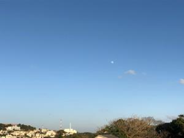
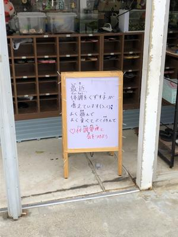
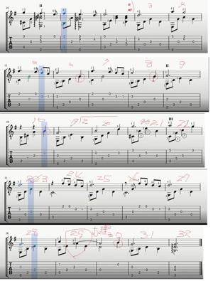
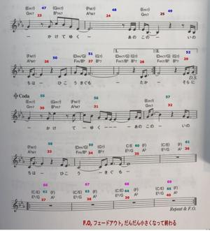

うるがいの話 ある日
最新:【うるがいの話 ある日】とは 一日だけのプログです
『うるがいの話』の最新一日だけのプログで、通信料が少なく経済的だ。カニの画像をクリックすると全ての日付が載る『うるがいの話』サイトを表示します
|
|
【うるがいの話】 うるがい(ｳﾙｶﾞｲ urugai)とは、『もずくがに』の名前でとても大きくなります。 |
|---|---|
|
|
【カミマヤーの話】 猫のことを方言でマヤーといいます。カミマヤーとは、神の猫のことです。 |
|
【タナガーの話】 たながー（ﾀﾅｶﾞｰtanagaa）とは手長えびのことで、何種類かあり大きいのは車 エビぐらいになります。 |

|
【ぶながぁの話】 ぶながー(bunagaa)とは、赤い髪の毛、赤い身体、そして身長は１ｍ２０ｃｍ ぐらい、川の蟹を食べているの目撃された。場所は沖縄県国頭郡大宜味村のと ある村僕の隣近所に住んでいる爺さんから、聞いた話です。 |
|
|
【ギーマの話】 ギーマ(giima)とは、山原の里山に咲くスズランに似た、 花を付けます。実は食べられます、 気が付くと口の周りが紫になっています。 |
2021年12月17日 (金）
16:10
 
『ひこうき雲』を楽譜ソフトに登録したいが、楽譜が複雑（小節が多い）であ
る。うーん、苦労しそうだな・・・、登録しているときどこの小節を編集して
いるか番号がないと混乱してしまう。普通の楽譜には小節番号はない、そのた
め小節が多い楽譜の場合は、必ず小節番号を付ける。ふとアイデアがインクス
ケープ（ベクター形式の画像ソフト）を使えば出来そうだ。夜１０時過ぎから
挑戦してみる。おおおおお、簡単！。今までの苦労したのに、こんなに簡単に
そして綺麗にできる。優秀なエクセル等で挑戦したが、全く手に負えなかった
。うれしくて朝から、楽譜ソフトに楽譜を登録する（まだ完了していないが）。  
朝チラシでユニクロが年末バーゲンセールを、昨日買った商品が千円値下げさ
れていた。
１５時５３分 ビットコインの総資産 ￥１５、６３８